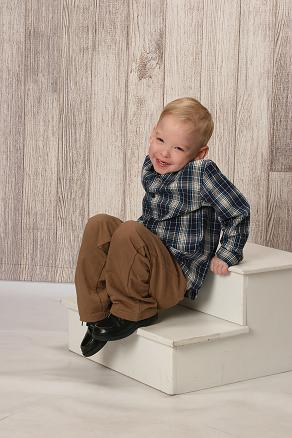
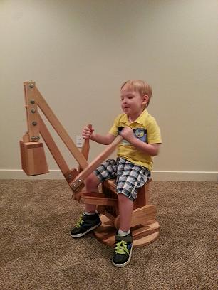
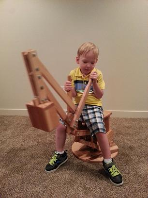
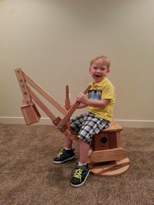

Our angel Noah joined our family on May 21, 2009 in Columbia, South Carolina.
Soon after he was born he stopped breathing and needed to be resuscitated before being whisked away to the NICU for observation. The next morning they discovered he had a significant heart murmur due to several heart defects. During the next year he had significant developmental delays and was in and out of the hospital with all sorts of medical issues. At age 1 he underwent open-heart surgery to repair the heart defects. The doctors hoped he would be able to catch-up developmentally. As the weeks went by, there was no noticeable difference and the doctors became concerned there was something more. At 15 months he was diagnosed with an extremely rare chromosomal abnormality; so rare that there is no name for his condition, only a long medical term, and as far as we know he is the only one to have it on record. Due to the rarity of his condition there is no prognosis and we take everything one day at a time.
He is the absolute joy of our lives! He is the happiest child and one cannot be around him without just falling completely in love. He is the most patient child as he endures his trials and is so mild-mannered. We are so blessed to have him in our family and in our home!
The Happy Factory Connection:
When Noah had open heart surgery, after the surgery his mom, Michelle, came to visit him and he was holding one of the Happy Factory toys. He was holding on for life with it. Then Grandma, (Michelle’s mom), came in and saw the toy and the Happy Factory Logo, and told Michelle that she knew where the Happy Factory was in her town, Cedar City, Utah.
Michelle works with the United Angels Foundation. United Angels Foundation is a non-profit, parent-to-parent support group that focuses on helping parents and families adjust to the birth of a child with special needs or disabilities. (https://www.unitedangelsfoundation.org/walkwithangels/ ).
Earlier this year Michelle contacted the Happy Factory about getting some of the toys like Noah had received in the hospital to pass out at her “Walk with Angels” by the United Angels Foundation. After she had distributed the toys, she came in personally to thanks us for the toys and to deliver a thank you note and brought her son Noah with her.
Noah is about five years old now and got to see the Happy Factory first hand. Due to his affliction, Noah has less muscle and coordination than children his age. We put Noah on one of the Happy Factory steam shovels to let him play. At that time he didn’t have the muscle and coordination to manipulate the toy so mom had to help him move it. The Happy Factory sent one of the steam shovels to Noah for home use. Now a few months later we have photos of Noah sitting on the steam shovel and working it by himself.
It does a heart good to see the fruits of your labor change lives. We hope that through continued use of the steam shovel, and the love and support of his family and friends, Noah will keep making great progress in developing his mind and body. We are blessed to be a part of Noah’s life.
Meet Noah




Douglas J.Carr
▲